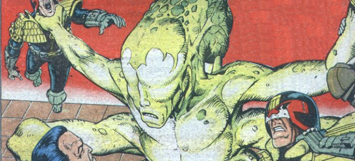

A child with psi-powers who was predicted to be able to save Mega-City One from a terrible future disaster, he was judged evil by Dredd during The Judge Child quest, and abandoned to his fate.
Art by Steve Dillon
| Story Title | Parts | Pages | w indicates a wraparound coverCovers | Year(s) | Issues | Writer | Artist | Colourist | Letterer |
|---|---|---|---|---|---|---|---|---|---|
From Judge DreddThe Judge Child | 26 | 163 | 156: Brian Bolland 159: Ron Smith 160: Mike McMahon 161: Brian Bolland 163: Mike McMahon 164: Ron Smith 170: Mike McMahon 172: Brian Bolland 173: Brian Bolland9 | 1980 | 156-181 | Alan Grant John Wagnervarious | Brian Bolland: 1,7,17‑18 Ron Smith: 2‑4,9‑10,12‑14,19‑20,24‑26 Mike McMahon: 5‑6,8,11,15‑16,21‑23 various | <-- pp1-2e., [b&w] | Tom Frame |
From Judge DreddDestiny's Angels | 8 | 66 | 281 [w]: Carlos Ezquerra 284: Carlos Ezquerra 286: Carlos Ezquerra 288: Carlos Ezquerra 1w,3 | 1982 | 281-288 | Alan Grant John Wagnervarious | Carlos Ezquerra | <-- 16pp, [b&w] | Tony Jacob |
From Judge DreddCity of the Damned | 14 | 91 | 394: Ron Smith 396: Robin Smith 397: Steve Dillon 402: Brendan McCarthy 405: Brendan McCarthy 5 | 1984-1985 | 393-406 | Alan Grant John Wagnervarious | Steve Dillon: 1, 5‑7, 12‑13 Ron Smith: 2‑3, 10, 14 Kim Raymond: 4, 11 Ian Gibson: 8‑9 various | <-- 26pp, [b&w] | Tom Frame |
From Judge DreddIn the Year 2120 | 1 | 24 | Jason Brashill 1 | 1998 | 1077 | John Wagner | Jason Brashill | Dondie Cox | Tom Frame |
| >> Features << | |||||||||
From 2000 I.D.Judge Child | 1 | 1 | 0 | 1990 | 704 | editorial | unknown | <-- | n/a |
From 2000 I.D.The Mutant | 1 | 1 | 0 | 1990 | 706 | editorial | Paul Marshall | <-- | n/a |
| year | episodes | pages |
| 1978 | 0 | 0 |
| 1979 | 0 | 0 |
| 1980 | 26 | 163 |
| 1981 | 0 | 0 |
| 1982 | 8 | 66 |
| 1983 | 0 | 0 |
| 1984 | 6 | 39 |
| 1985 | 8 | 52 |
| 1986 | 0 | 0 |
| 1987 | 0 | 0 |
| 1988 | 0 | 0 |
| 1989 | 0 | 0 |
| 1990 | 0 | 0 |
| 1991 | 0 | 0 |
| 1992 | 0 | 0 |
| 1993 | 0 | 0 |
| 1994 | 0 | 0 |
| 1995 | 0 | 0 |
| 1996 | 0 | 0 |
| 1997 | 0 | 0 |
| 1998 | 1 | 24 |
| 1999 | 0 | 0 |
| 2000 | 0 | 0 |
Comic strip data (excludes other content):